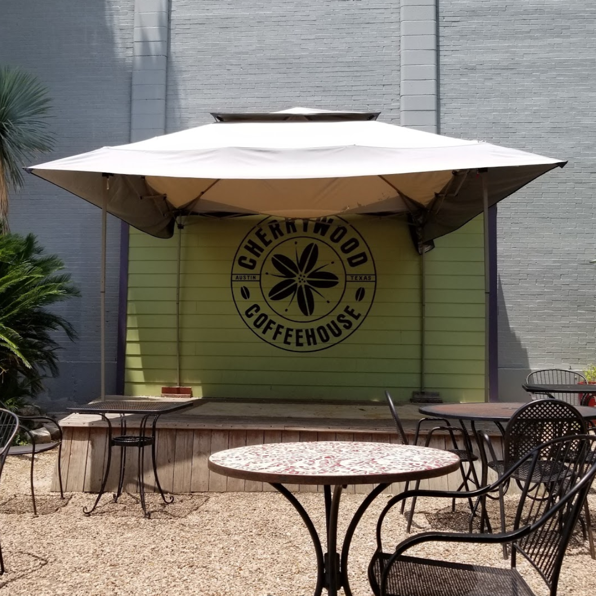
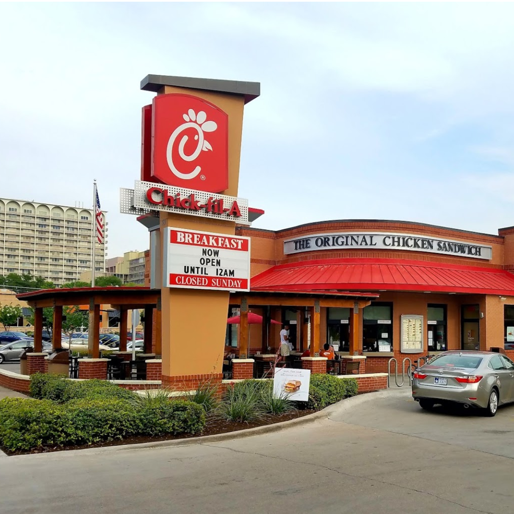
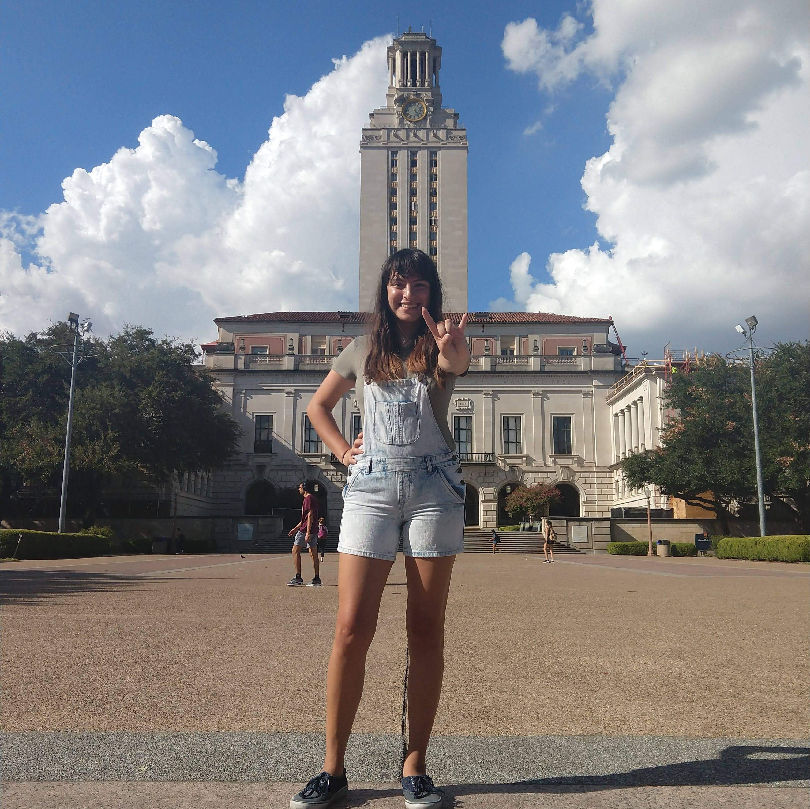

PLACES OF INTEREST
PETER PAN MINI-GOLF
1207 Barton Springs Rd
We've been on a couple of dates here. Be aware: it's cash-only!

CHERRYWOOD COFFEEHOUSE
1400 E 38th 1/2 St
Alicia's favorite restaurant! The manager knows us here and has our regular order memorized. Alicia gets the grilled shrimp taco plate, and William gets a gluten-free chicken and cheese sandwich.
WILDER WOOD
1300 E 7th St
Our go-to gluten-free restaurant. Their original location recently closed, but this new location has a beautiful view of downtown!
LYNDON B. JOHNSON LIBRARY
2313 Red River St
Our first date spot! We got a parking-ticket, but it was worth it.

BLUE CAT CAFÉ
95 Navasota St
A very Austin kind of place: Alicia once spent an entire day here hanging out with cats and snacking on cafe food.
The Boardwalk at Lady Bird Lake
1820 S Lakeshore Blvd
Our proposal spot! Alicia has often called this the best place in the world.
Lone Star Riverboat
208 Barton Springs Rd
We've had a few dates here, both on their river cruises and on rented kayaks and their unique swan boats!
The Hideout Theatre
617 Congress Ave
We've had a few dates here. They do fun and inexpensive improv shows!
Torchy's Tacos
2801 Guadalupe St. 5-B
Really, really, good tacos.
Home Slice Pizza
1415 S Congress Ave
We're told this place has amazing pizza, but we've never eaten here because an employee described it to us as "a temple of gluten."
Cream Whiskers
2222 Rio Grande St B120
A really cute place with unique cream puffs and board games.

Chick-fil-A
503 W Martin Luther King Jr Blvd
William loves Chick-fil-A. We met here for lunch a couple of times a week throughout the summer of 2017 while Alicia worked at TxDOT nearby.
Sir Swante Palm Neighborhood Park
200 N IH 35 Svrd SB
We've been here a few times specifically because it's one of the few parks in the area with swings! It also has fun toys that make you very dizzy.

UT Tower
110 Inner Campus Drive
If you want to see any part of the UT campus, the tower is the place to go.

Menchie's Frozen Yogurt
1000 E 41st St
Alicia's and her sister Emily's favorite dessert! We go here every other week or so.
"i love you so much" MURAL
1300 S Congress Ave
This is a pretty iconic Austin picture spot.
Hopdoddy Burger Bar
1400 S Congress Ave
Alicia's favorite burger place! We strongly recommend the parmesan fries.
San Jose Catholic Church
2435 Oak Crest Ave
This church has one of our favorite adoration chapels (and it's open 24 hours!)
Bennu Coffee on Congress
515 S Congress Ave
This place makes really good literary-themed mochas. It's one of Alicia's favorite study spots.
Quack's 43rd Street Bakery
411 E 43rd St
One of Alicia's favorite study spots. This place has adorable baked treats (including really good brownies) and ample parking.
Cafe Monet Art Studio
4700 W Guadalupe St
We've had several dates at this paint-your-own-pottery spot.